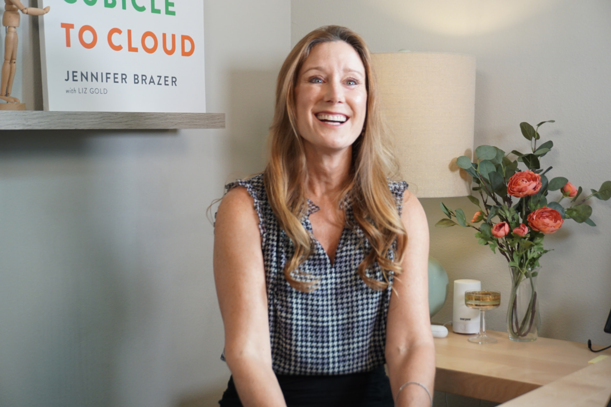
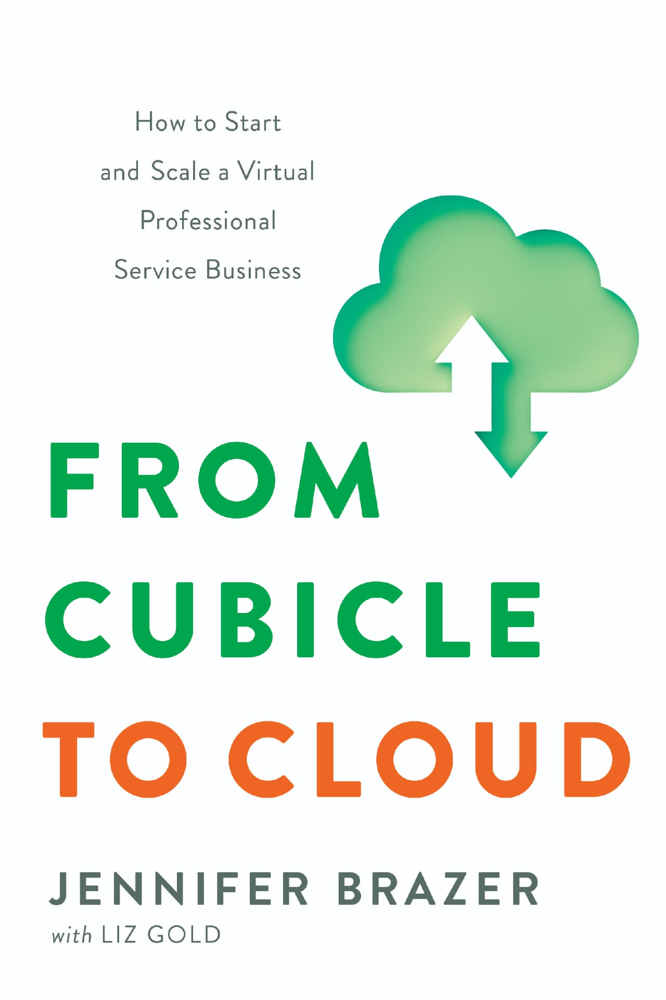

About Complete Controller
A better way to help business owners understand their numbers.
Before founding Complete Controller, Jennifer Brazer worked as a CFO, where she saw firsthand how difficult it could be for business owners to make confident decisions without timely, reliable financial information. She believed small businesses deserved better access to bookkeeping, accounting support, and financial insight they could actually use.
That belief became Complete Controller.
Complete Controller provides cloud-based bookkeeping, accounting support, and financial clarity for business owners who need reliable numbers and a team they can count on.

Our Story
From CFO to Founder
Business Owners Needed Financial Information They Could Trust
Jennifer spent years working alongside small business owners who were doing everything they could to grow their companies... serving customers, managing employees, solving problems, and carrying the constant responsibility that comes with owning a business.
But behind the scenes, she kept seeing the same challenge.
Too many capable business owners were making important decisions without truly trusting their numbers.
Larger companies had accounting departments, controllers, and CFOs helping leadership understand what was happening financially. Small businesses rarely had access to that same level of support.
Jennifer saw an opportunity to change that.
Building a Better Bookkeeping and Accounting Support Model
In 2007, Jennifer founded Complete Controller around a simple idea: small business owners deserved more than a record of what had already happened.
They deserved financial information they could understand, people they could rely on, and greater visibility into where their business was going.
Complete Controller was built to bring those pieces together.
As technology changed, the company evolved with it, embracing cloud-based systems and developing a team-centered approach that could support business owners beyond the limits of a traditional bookkeeping relationship.
What started as Jennifer's idea grew into Complete Controller: a company built around people, financial clarity, and the belief that better information helps business owners make better decisions.
Always learn. Always evolve. Always innovate.
Jennifer Brazer
Founder & CEO, Complete Controller
What We Believe
What started as an idea became how we work.
The lessons that inspired Complete Controller still shape the way we work today.
01
Financial Clarity Helps Business Owners Make Better Decisions
Your books shouldn't simply tell you what happened. They should help you understand your business and make more informed decisions about what comes next.
02
Technology Should Support People, Not Replace Them
We believe technology works best when it gives people better information, removes unnecessary friction, and creates more time for meaningful work and conversations.
03
Small Businesses Deserve Big-Business Financial Insight
The size of your company shouldn't determine whether you have access to reliable financial information and experienced support.
04
Relationships Matter Behind the Numbers
Behind every set of books is a business someone worked hard to build. Understanding the people, goals, and challenges behind the numbers has always mattered to us.
“I love working with my Complete Controller accounting team because it feels like they are in my office with me.”
Lori Coria — Business Owner, Afters Ice Cream
The Journey
From Cubicle to Cloud: The Complete Controller Journey
Complete Controller has changed a lot since 2007, but the problem we set out to solve has remained remarkably consistent: business owners need financial information they can trust and a team they can count on.
CFO
Jennifer Sees the Gap
Working as a CFO gave Jennifer a firsthand look at the difference reliable financial information could make... and how difficult that level of support was for many small businesses to access.
2007
Complete Controller Begins in 2007
Jennifer turns that experience into Complete Controller, creating a new approach to helping business owners gain greater clarity and confidence in their financials.
The Cloud
Cloud Technology Changes the Model
As cloud technology changed what was possible, Complete Controller embraced new ways for accounting professionals and business owners to work together.
Growth
The Company Grows Across Industries
The Complete Controller model grows to support business owners across industries and across the country while remaining grounded in Jennifer's original vision.
Today
Financial Support Keeps Evolving
Complete Controller continues bringing together experienced people, financial expertise, and evolving technology to help business owners better understand the financial side of their companies.

The Founder Story, in Her Own Words
The Founder Story Behind From Cubicle to Cloud
Jennifer's journey from CFO to entrepreneur, and the lessons learned while building Complete Controller, became the story behind From Cubicle to Cloud.
The book takes readers behind the scenes of entrepreneurship, leadership, innovation, and the experiences that shaped both Jennifer and Complete Controller along the way.
The Next Chapter
The tools will change. Our purpose won’t.
Complete Controller began with an idea about giving business owners better access to their financial information.
Nearly two decades later, the tools available to accomplish that are changing faster than ever.
Cloud technology changed how businesses and accounting teams could work together. Today, automation and artificial intelligence are opening another chapter.
We're embracing that evolution while staying grounded in the principles that brought us here: experienced people, meaningful relationships, reliable financial information, and technology that makes all three stronger.
CAS-i and the tools we're building today represent the next step in that journey, not replacing the human side of accounting, but helping make financial information more accessible, useful, and easier to understand.
As bookkeeping, accounting systems, automation, and cloud-based financial tools continue to evolve, Complete Controller remains focused on the same purpose: helping business owners gain clarity, confidence, and support from the people and technology behind their numbers.
Because technology will continue to change.
Our reason for using it won't.
Complete Controller was built on the belief that every business owner deserves the confidence that comes from understanding their numbers. Nearly two decades later, that belief continues to shape who we are, how we serve, and where we're going.
Jennifer Brazer — Founder & CEO, Complete Controller
Get Started
Talk With an Expert
Complete Controller · Free Consultation
Request your free financial consultation. Our team will respond within 24 hours.